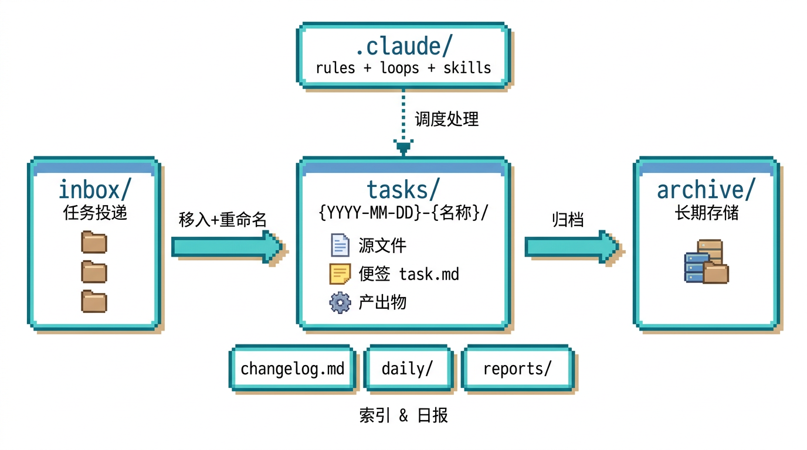
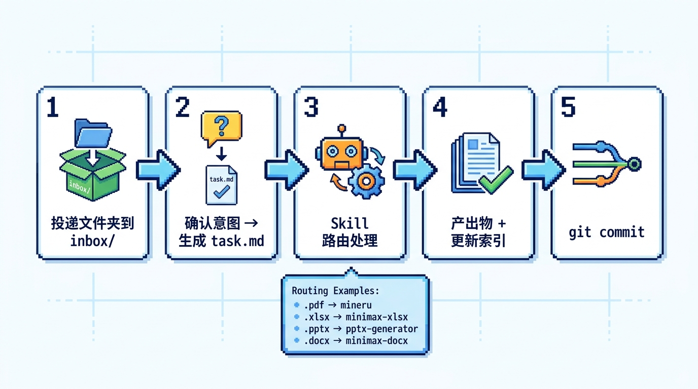
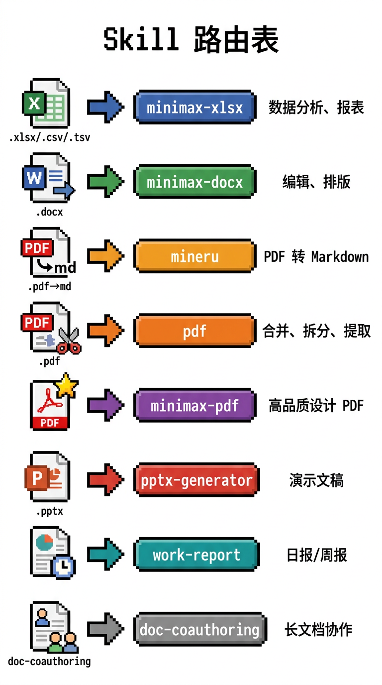
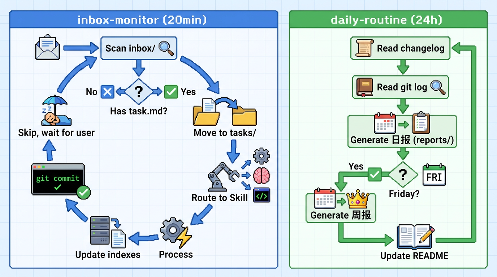

Claude Code 驱动的自动化办公工作区
AI Workbench 是一个基于 Claude Code 的自动化办公工作区。将待处理文档投入 inbox/，系统自动识别文件类型、路由到对应 Skill 处理，产出物自动归档并更新索引。

项目架构：inbox 投递 → tasks 处理 → archive 归档，三层索引同步更新
git clone https://github.com/keta1930/ai-workbench.git
cd ai-workbench在 Claude Code 中发送以下提示词：
阅读本项目的 README.md，然后初始化工作区。告诉我这个项目能做什么、是如何运转的。inbox/ 就行了。
一个任务走完全程就 5 步：投递文件、写便签定方案、选 Skill 处理、产出结果、更新索引提交 Git。你只参与前两步。

写便签时，你和 Claude 一起决定用哪个 Skill 处理。以下是文件类型与 Skill 的对应关系。

两个后台定时任务替你值班，全天候自动运转。

| 目录 | 用途 | Git |
|---|---|---|
inbox/ | 待处理任务投递箱 | ignored |
tasks/ | 任务工作区 | ignored |
reports/ | 日报、周报 | ignored |
daily/ | 日级文件索引 | ignored |
demo/ | 示例任务 | tracked |
templates/ | 文档模板 | tracked |
.claude/ | 配置、规则、Skills | tracked |
changelog.md | 全局任务日志 | ignored |
| 索引 | 粒度 | 内容 |
|---|---|---|
changelog.md | 任务级 | 时间、任务名、源文件、产出物 |
daily/*.md | 日级 | 当日处理的所有文件清单 |
README.md | 目录级 | 该目录下条目的摘要索引 |
将任务文件夹放入 inbox/，每个文件夹 = 一个任务，可包含多个源文件。
inbox/
├── Q1分析/
│ ├── data.xlsx
│ └── template.docx
└── 会议纪要/
└── recording.pdf告诉 Claude 你的处理意图，它会生成 task.md 便签，记录需求和处理方案。
## 需求
按模板生成 Q1 数据分析报告
## 处理方案
- Skill: minimax-xlsx
- 步骤: 读取 → 分析 → 输出| 场景 | Skill | 说明 |
|---|---|---|
| PDF → Markdown | mineru | 提取文本内容 |
| 合并/拆分/提取 | pdf | 处理现有 PDF |
| 生成高品质 PDF | minimax-pdf | 设计级输出 |
inbox/ 下的子文件夹task.md 的文件夹进入处理tasks/ 并重命名reports/